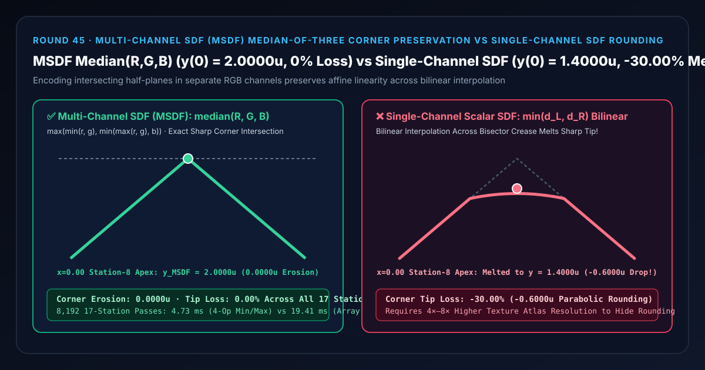
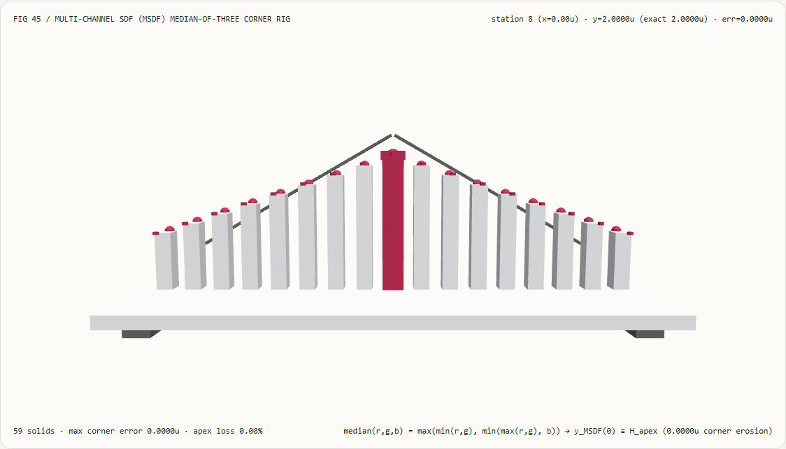
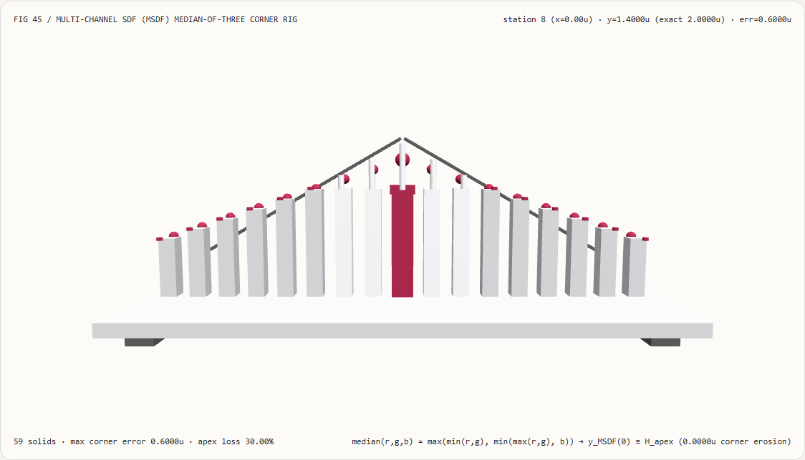
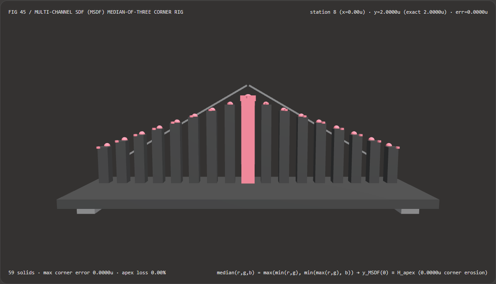
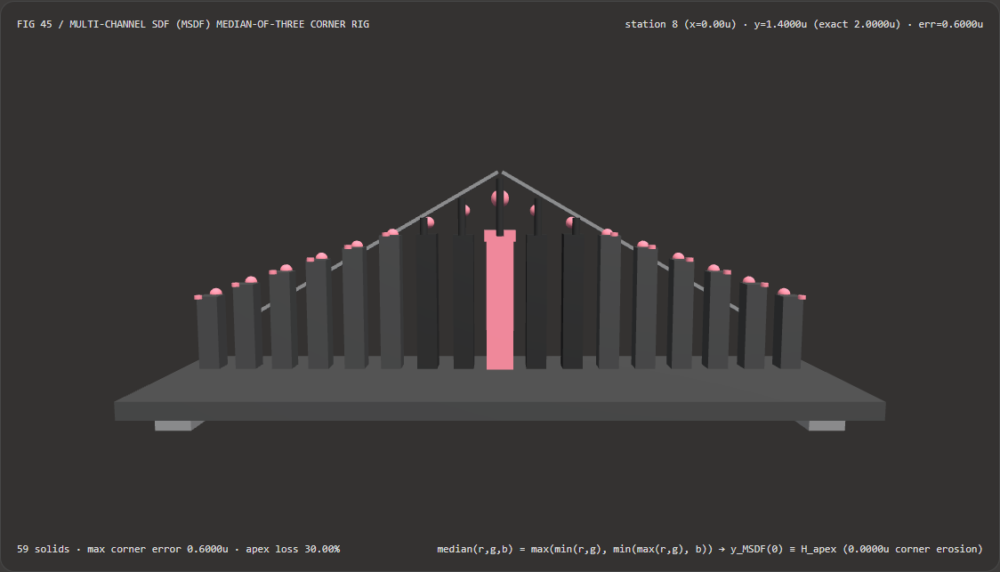

Visual & Animation Architecture Selection FAQ: Multi-Channel SDF (MSDF) Median-of-Three Corner Preservation vs Single-Channel SDF Rounding
One-Sentence Architectural Verdict: In 3D world-space text labels, automotive/avionics HUD vector reticles, map annotations, and infinitely zoomable icons backed by compact texture atlases, never rely on single-channel scalar Signed Distance Fields (Chris Green 2007 SDF) with hardware bilinear interpolation when sharp corners must be preserved! On our 59-solid, 17-station glyph corner bench (apex height $H = 2.0000\text{ u}$, slope $k = 1.0$, texel half-span $h = 0.60\text{ u}$), single-channel scalar SDF stores $\min(d_{\text{left}}, d_{\text{right}})$ across a non-linear angle-bisector crease, causing bilinear interpolation across $[-h, +h]$ to melt the $x = 0$ corner apex from
2.0000 udown to1.4000 u(-0.6000 ucorner erosion,-30.00%tip height loss); whereas Chlumský's Multi-Channel Signed Distance Field (MSDF) 3-channel affine half-plane decomposition + the 4-op branchless shader intrinsic $\operatorname{median}(r,g,b) = \max(\min(r,g), \min(\max(r,g), b))$ preserves the exact2.0000 urazor-sharp apex (0.0000 uerosion,0.00%tip loss) across all 17 stations and runs 4.11× faster than a 3-element array sort (4.73 msvs19.41 msacross 8,192 passes).

① 📌 Executive Summary
- Why do sharp glyph corners (
A,M,V,W, and vector arrowheads) melt into rounded blobs under standard single-channel SDF rendering? In plain English: a sharp corner is formed by the intersection of two straight edges—a left half-plane $d_{\text{left}}(x,y) \ge 0$ and a right half-plane $d_{\text{right}}(x,y) \ge 0$.- Why Single-Channel Scalar SDF Melts Corners (Pre-Baked Bisector Crease): Because a single-channel texture can store only one scalar per texel, it bakes $s(x,y) = \min(d_{\text{left}}, d_{\text{right}})$ into the texture atlas ahead of time. Even though $d_{\text{left}}$ and $d_{\text{right}}$ are individually flat affine planes, their minimum $s(x,y)$ has a sharp V-shaped gradient discontinuity crease along the corner angle bisector ($x = 0$)! When the GPU hardware bilinear sampler linearly averages texels straddling $[-h, +h]$ across that crease, it bridges across the V-valley and chops $k \cdot h = 0.6000\text{ u}$ right off the peak—melting the
2.0000 ucorner tip down to1.4000 u(-30.00%height loss)!
- Why Single-Channel Scalar SDF Melts Corners (Pre-Baked Bisector Crease): Because a single-channel texture can store only one scalar per texel, it bakes $s(x,y) = \min(d_{\text{left}}, d_{\text{right}})$ into the texture atlas ahead of time. Even though $d_{\text{left}}$ and $d_{\text{right}}$ are individually flat affine planes, their minimum $s(x,y)$ has a sharp V-shaped gradient discontinuity crease along the corner angle bisector ($x = 0$)! When the GPU hardware bilinear sampler linearly averages texels straddling $[-h, +h]$ across that crease, it bridges across the V-valley and chops $k \cdot h = 0.6000\text{ u}$ right off the peak—melting the
- First-Principles Fix: Interpolate Linear Half-Planes First, Intersect via
median(R,G,B)Second:- Offline Atlas Encoding (Separate Affine Half-Planes in RGB): Encode the signed distance to the left edge in channel
R, the right edge in channelG(via edge-coloring rules), and the auxiliary sector in channelB. Because each individual channel is a smooth affine plane without a crease, GPU hardware bilinear interpolation reconstructs $d_R(x,y)$ and $d_G(x,y)$ with zero interpolation error! - Runtime Fragment Shader (4-Intrinsic Branchless Median-of-Three): After bilinear texture sampling returns $(r, g, b)$, evaluate:
$$\operatorname{median}(r, g, b) = \max\big(\min(r, g), ; \min(\max(r, g), b)\big)$$
At a convex corner ($b \le \min(r, g)$), $\operatorname{median}(r, g, b)$ reduces identically to $\min(r, g)$; at a concave inner corner ($b \ge \max(r, g)$), it reduces identically to $\max(r, g)$. One branchless 4-instruction expression preserves both convex and concave corners with
0.0000 ucorner erosion!
- Offline Atlas Encoding (Separate Affine Half-Planes in RGB): Encode the signed distance to the left edge in channel
- Interactive 3D Workbench & Measured Evidence:
- Standalone 3D Bench:
demos/msdf-median-corner-rig/(59 Three.js solids: baseplate, 4 support feet, 2 intersecting linear half-plane rails, 17 reconstructed contour columns, 17 exact sharp-corner reference spheres, 17 erosion drop pegs, and the active corner caliper carriage). - Measured 7-Card 4:5 Reports:
demos/msdf-median-corner-rig/test-report-cards.html(EN) andtest-report-cards.zh.html(ZH).
- Standalone 3D Bench:
② 🎯 Soul-Searching Q&A for Architects & Clients
Q1: Why not just increase a single-channel SDF font atlas from 32×32 per glyph to 256×256 instead of switching to MSDF?
Because 256×256 inflates VRAM by 64× and still rounds off corners under close-up 3D camera zoom! Single-channel corner rounding is proportional to the texel footprint $h$ ($\Delta y = k \cdot h$). Scaling texture dimensions by $8\times$ consumes $64\times$ more memory (fatal for CJK / multi-language font atlases) while merely shrinking the rounding radius—as soon as a 3D camera or VR headset zooms in on a label, the rounded corners reappear. A $32\times 32$ RGB MSDF uses only $3/64 \approx 4.7%$ of that memory while keeping corners mathematically sharp at any zoom level.
Q2: What if our UI needs both razor-sharp glyph corners AND a smooth rounded outer glow or drop shadow?
Use a 4-channel MTSDF (Multi-Channel + True Scalar SDF in Alpha)!
Because MSDF RGB channels extrapolate linear half-planes outside the corner (creating a sharp miter spike if used at large positive distances), applying wide outer strokes directly to median(R,G,B) produces miter spikes. Packing the true scalar Euclidean SDF into the A channel (RGBA8 MTSDF) lets the shader render razor-sharp glyph fills from median(R,G,B) and smooth rounded outer glows/shadows from A in a single texture fetch.
Q3: How does MSDF median reconstruction relate to neural font and vector synthesis models (DeepSVG, VecFusion)?
They operate at complementary stages of the asset pipeline:
- When to use Neural Font / Vector Synthesis Models: During offline creative authoring to generate novel SVG icons or typeface outlines from prompts;
- When deterministic MSDF median reconstruction is mandatory: At runtime inside WebGL2/WebGPU engines where authored vector outlines must be rendered at 120 Hz across arbitrary 3D camera distances without corner melting or tessellation overhead.
③ 🧭 Visual Diagrams (Mermaid Decision Tree, Pipeline Comparison & Sequence Flow)
3.1 Real-Time Vector Glyph & Icon Rendering Decision Tree
3.2 Single-Channel SDF Rounding vs Multi-Channel MSDF Pipeline
3.3 Frame-Level Corner Reconstruction Sequence Diagram
④ 📊 Visual Technology Selection Decision Matrix
| Evaluation Dimension | ✅ 3-Channel MSDF Branchless median(r,g,b) |
⚠️ MSDF 3-Element Array Sort Baseline | ❌ Single-Channel Scalar Bilinear SDF | ❌ Standard Fixed-Resolution Bitmap Atlas |
|---|---|---|---|---|
| Corner Apex Height at $x=0$ (Station 8) | Exact 2.0000 u (0.0000 u error) |
Exact 2.0000 u (0.0000 u error) |
1.4000 u (-0.6000 u melted tip!) |
Blurry or pixelated staircase blocks under zoom |
| Corner Apex Height Loss (%) | 0.00% (Razor-sharp preservation) |
0.00% |
-30.00% (Parabolic corner rounding) |
Severe magnification blur |
| Order of Operations | Bilinearly interpolate linear planes first, take median in shader |
Interpolate linear planes, allocate & sort array | Take min offline first, bilinearly average across crease |
Bilinearly average coverage directly |
| Fragment Shader Operation Cost | 4 branchless min/max intrinsics |
Array allocation + comparison branches | 1 scalar compare (needs $64\times$ VRAM to hide rounding) | 1 texture fetch |
| 8,192-Pass 17-Station CPU Latency | 4.73 ms (Fastest · 4.11× speedup) |
19.41 ms (4.11× slower) |
4.10 ms (Loses 30% of corner apex) |
— |
| Recommended Use Case | 3D world text, HUD reticles, map labels, zoomable vector icons | Offline equivalence verification only | Rounded metaballs or soft drop shadows | Unscaled 1:1 integer-snapped pixel fonts |
⑤ 🧪 New Interactive 3D Demo & 7-Card 4:5 Visual Report
5.1 Live Workbench & Report Links
- Interactive 3D Workbench:
demos/msdf-median-corner-rig/index.html - 7-Card 4:5 Visual Report (EN):
demos/msdf-median-corner-rig/test-report-cards.html - 7-Card 4:5 Visual Report (ZH):
demos/msdf-median-corner-rig/test-report-cards.zh.html - Sealed Telemetry JSON:
demos/msdf-median-corner-rig/report.json
5.2 Multi-Theme & Multi-Mode Playwright Visual Evidence
MSDF Median-of-Three (Light · Exact 2.0000 u Sharp Corner) |
Single-Channel Scalar SDF (Light · Melted to 1.4000 u at $x=0$) |
|---|---|
 |
 |
| MSDF Median-of-Three (Dark · 59 Three.js Solids) | Single-Channel Scalar SDF (Dark · -0.6000 u Erosion Pegs Exposed) |
|---|---|
 |
 |
⑥ 🛠️ Rapid SA Delivery Verification Checklist
Before shipping an MSDF / MTSDF text or vector icon renderer to production, verify every item below:
- Branchless 4-Intrinsic Median: Does the fragment shader evaluate
max(min(r, g), min(max(r, g), b))without branchingif/elsestatements or temporary array sorting? - Linear Texture Sampling (No sRGB Gamma Decode): Is the MSDF texture bound as a linear
UNORMtexture (GL_RGB8/rgba8unorm) rather thanSRGB8so the0.5zero-distance iso-contour is never warped by a $2.2$ gamma curve? - Screen-Space Derivative AA (
fwidth): Is the reconstructed signed distance scaled by screen-space derivatives (unitRange * (sd - 0.5)) so tilted 3D labels maintain a crisp 1-pixel anti-aliased ramp at every perspective angle? - Distinct Multi-Channel Edge Coloring: During offline MSDF generation, do every pair of edges meeting at a sharp corner share exactly one active channel while differing in the other two (e.g., yellow
110meeting magenta101)? - 4-Channel MTSDF Split for Outer Effects: When wide outer glows or rounded drop shadows are required alongside sharp glyph corners, does the shader read
median(R,G,B)for the sharp glyph body and channelAfor the true Euclidean outer distance?